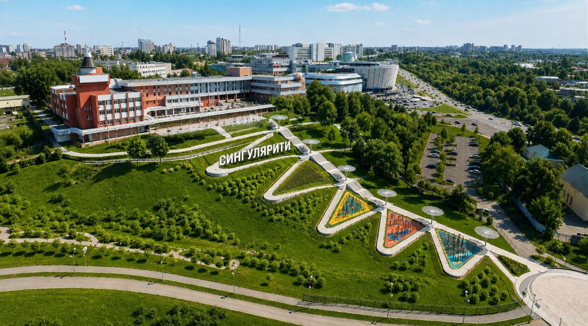
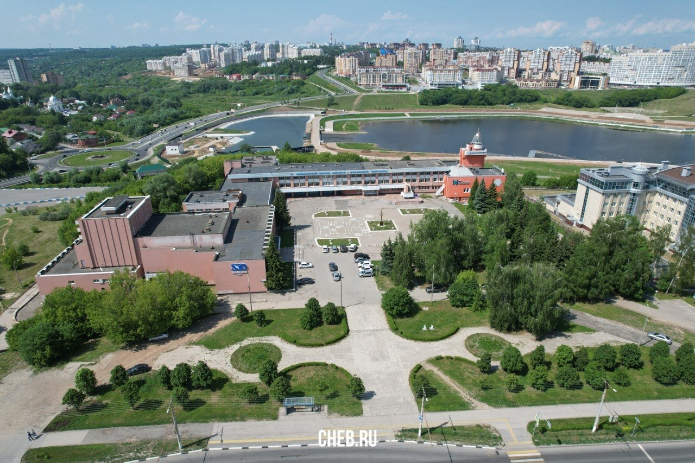
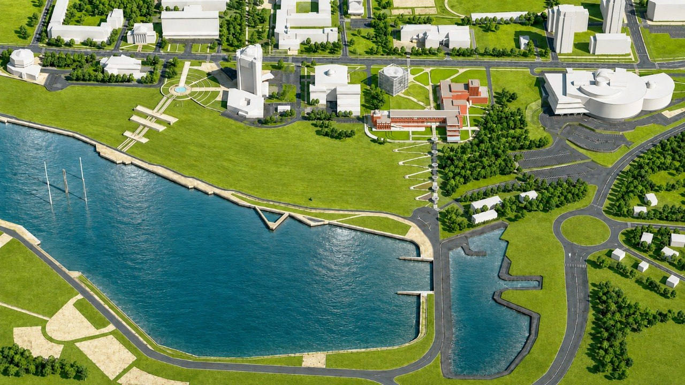
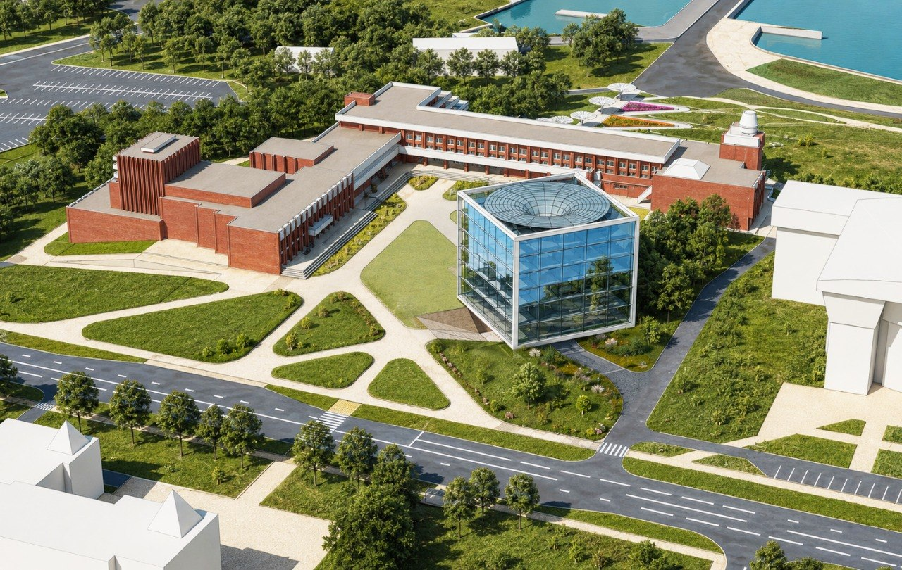
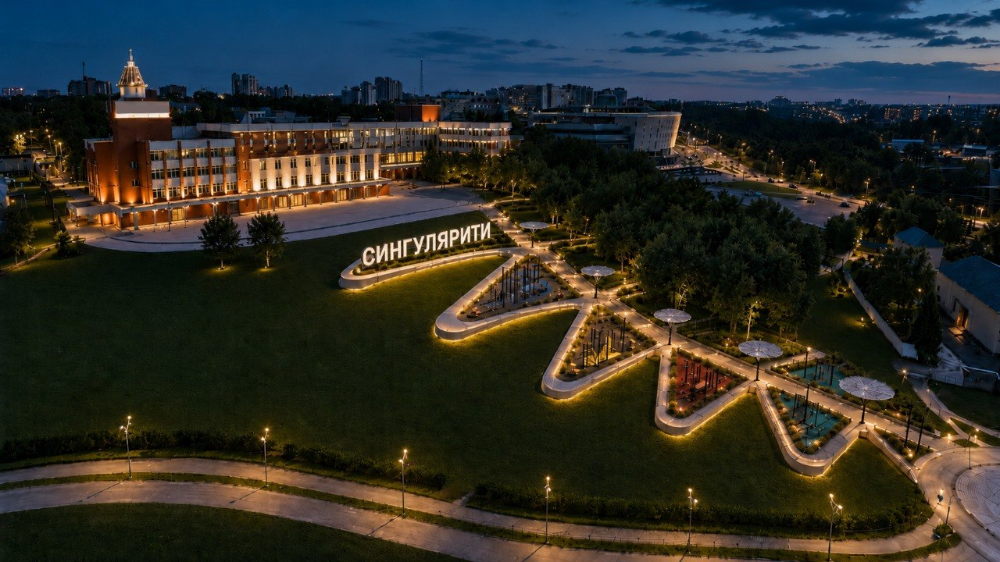
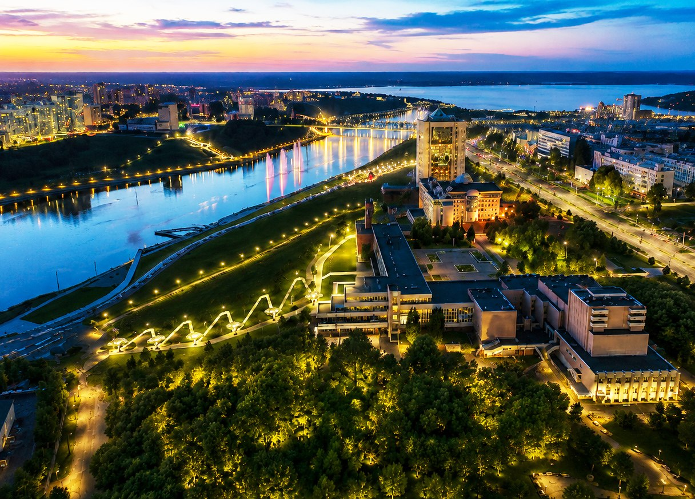

12 600+
м² работ и новых пространств — ориентир концепции.
ЧЕБОКСАРЫ · ПРЕЗИДЕНТСКИЙ БУЛЬВАР, 14
Дворец сохраняет свою историю и получает новые пространства для занятий, встреч, спорта и городских событий.
Сохраняем главное.
Добавляем новое.
Дворец уже много лет объединяет детей, педагогов и семьи. Поэтому проект не предлагает начинать всё заново. Он сохраняет знакомый образ Дворца и обновляет здания и территорию вокруг них.
Потяните разделитель, чтобы сравнить Дворец сегодня и его будущий вид.


м² работ и новых пространств — ориентир концепции.
м² — площадь нового корпуса.
м² — зелёные эксплуатируемые террасы.
м² — ориентир модернизации существующих корпусов.
Параметры относятся к текущей концепции и могут уточняться на следующих этапах проектирования.
Новые маршруты помогут связать Дворец с набережной. Склон станет удобным местом для прогулок, отдыха, спорта и событий.



Башня и узнаваемая часть существующего ансамбля сохраняются.
Около 5 000 м² для лабораторий, проектной работы, медиастудий и других образовательных пространств.
Лестница длиной 111 метров создаст прямой маршрут от Дворца к набережной.
Около 300 метров серпантинного маршрута сделают склон доступнее для маломобильных людей и семей с колясками.
На склоне появятся открытые площадки для отдыха, спорта и встреч с видом на залив.
Кровли и новые уровни территории станут дополнительными местами для занятий и отдыха.

История Дворца началась задолго до нынешнего здания — с Центрального Дома пионеров и октябрят, открытого в Чебоксарах в 1936 году.
13 октября открылся Центральный Дом пионеров и октябрят. Работали танцевальный, драматический, хоровой кружки, изостудия и духовой оркестр. Их посещали более 300 детей.
Массовый отдел и Комната пионерского актива стали центрами детских мероприятий города.
Развиваются мото-, фото-, радио- и авиамодельные кружки. Появляется отдельный отдел технического творчества.
Дворец отмечает юбилей. Развивается профориентационная работа и появляются новые направления.
Открывается здание на Президентском бульваре: кабинеты, актовый зал на 500 мест, мраморный зал, кафе и зимний сад. Башня становится узнаваемой частью города.
Во Дворце проходит Всероссийский форум «Искусство объединяет, учит, воспитывает».
Запускается детский технопарк «Кванториум», который позже становится самостоятельным учреждением.
Обследование, уточнение концепции и поэтапное обновление пространства.
Новые пространства дополнят привычные занятия проектной работой, технологиями, наставничеством и событиями.
Помощь ребёнку в выборе направления и следующего шага в обучении.
Поддержка талантов и развитие олимпиадных и проектных навыков.
Знакомство с профессиями и первые проектные задачи ещё в школе.
Практика работы с современными цифровыми инструментами и ИИ.
Спортивные и цифровые форматы в одной открытой среде.
Клубы, хакатоны, события и пространства, где подростки могут оставаться после занятий.
Проект рассчитан на несколько этапов. Решения будут уточняться по мере обследования зданий и разработки рабочей документации.
Обследование зданий и уточнение концепции.
Начало работ и подготовка образовательной инфраструктуры.
Работы с существующими корпусами и развитие территории.
Оценка результатов и корректировка следующих этапов.
Завершение благоустройства и развитие программ.
Для детей. Для города. Для будущего Дворца.
Вернуться наверх ↑